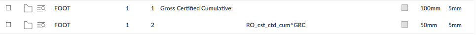

As an alternative to showing the detail amounts in the body, you can show them in the header or footer, but the method is different from the body.
Suppose you want to show the gross cumulative value in the footer, and the Item ID for the gross certified value is GRC.

In this case, you need to provide the Item ID (GRC), since the header and footer are not covered by the parameter list.
The fields for the previous and this period values are RO_cst_ctd_prev^<itemID> and RO_cst_ctd_tp^<itemID>.